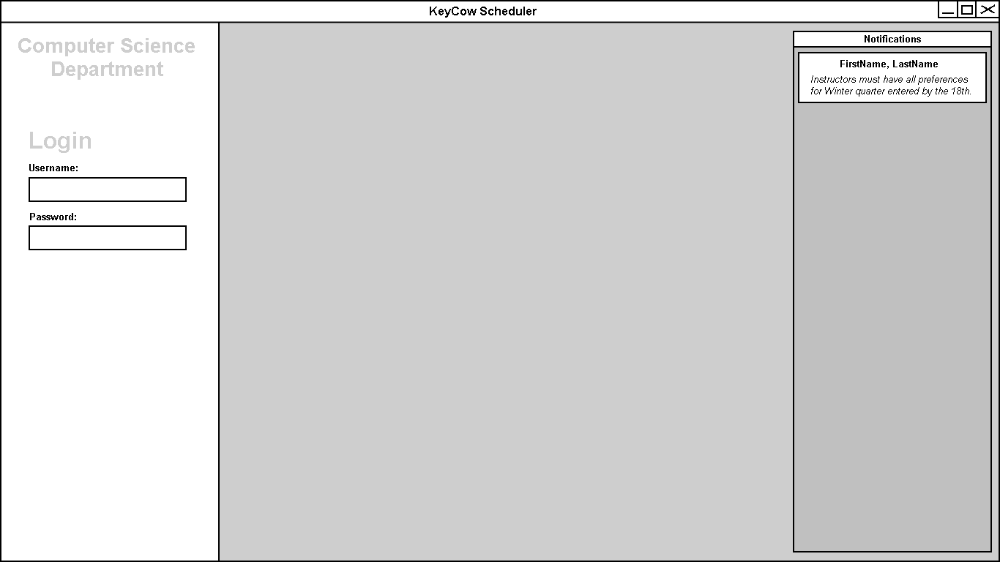

When the user opens the application, they are presented with a login
screen:
The background of the login screen as well as the department logo is
configured by the scheduler, so that the instructors are greeted with a familiar screen.
The nofifications window on the right informs them of any deadlines or
other useful information

After logging in, the user is presented with an interface customized
just for them.